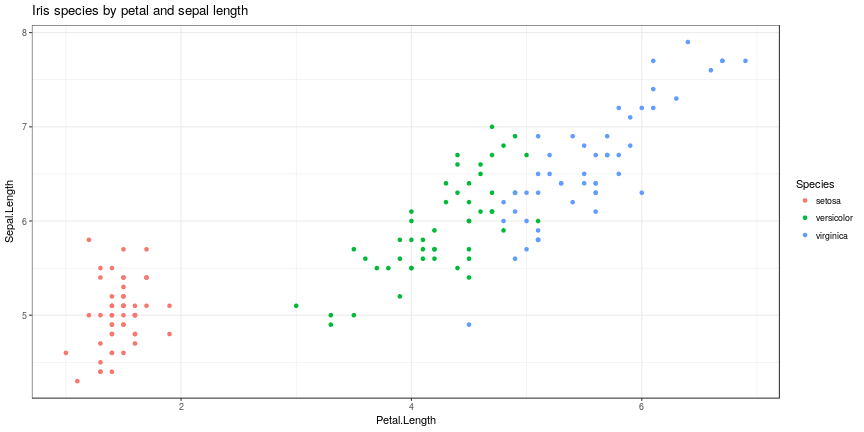

Task
- Build a shiny application having the following properties
- Some user input widgets (e.g. slider)
- Reactive output displayed in the app
- Directly included documentation
LateNightCoder0815
22. June 2018
We use the iris data set to build our web application. We performed the following exploratory data analysis on the data (code is embedded).
